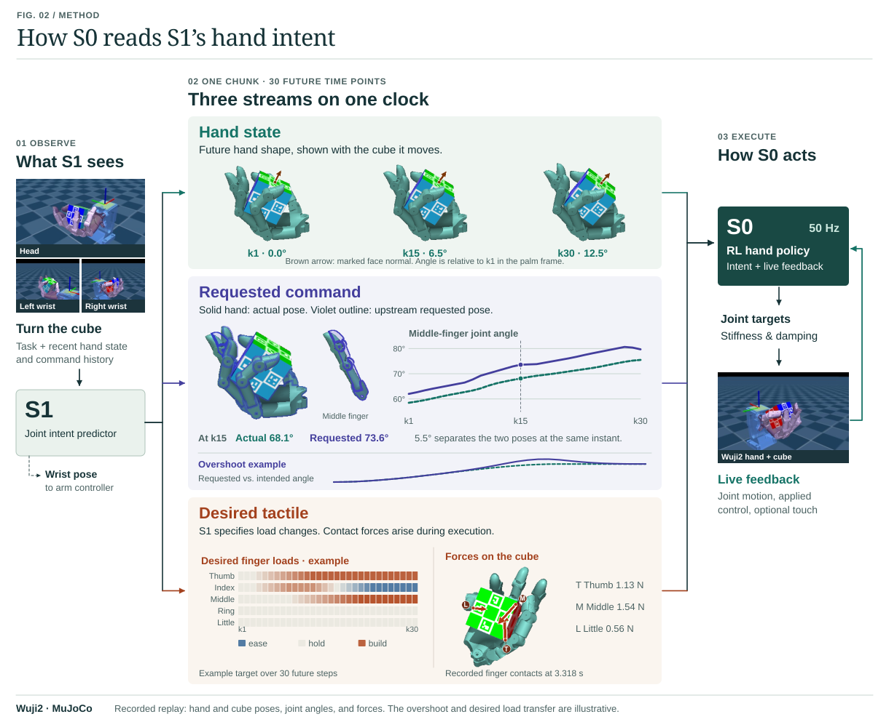

DEXTEROUS MANIPULATION
What should a robot hand learn from a demonstration?
A demonstration shows a flower held straight and lowered into a narrow vase. A robot can follow the recorded wrist path and still arrive with the stem tilted. Repeating the finger motion may carry that error all the way to the rim. The hand needs to adjust the grasp while continuing the same operation.
This is the execution capability I want to learn from demonstrations. The motion should remain recognizably close to the reference, but contact may require one finger to ease, another to take the load, or the stem to pivot before insertion continues. The outcome matters too: the flower must clear the rim and remain in the vase after release. Neither a plausible-looking hand trajectory nor a moment of successful contact establishes that.
The proposed division is S1 for future intent, S0 for feedback execution. S1 uses the scene, task and recent history to say what motion, request and contact behavior should come next. S0 uses those intentions together with current feedback to choose motor actions. It can make a local correction before the next high-level prediction arrives, then rejoin the intended motion. The research question is whether this division can preserve the demonstrated operation while making its execution physically effective.
The development order follows that question: first teach S0 to complete clean operations from recorded or constructed intent; then learn S1 and the visual execution model; finally test the complete system during motion, with and without disturbances. A push is one way to expose the value of feedback. Completing the intended manipulation is the objective throughout.
An intention has motion, a request and a contact goal
A demonstrated hand pose does not fully specify how it was produced. A finger pressing an object can remain almost still while its requested target continues through the surface. That difference carries information about the controller’s request. Yet a larger position request alone does not specify whether the desired behavior is to hold the present load, reduce it, or transfer support to another finger. This motivates three distinct future streams:
- Hand state (S): how the hand should actually move—its shape, keypoint motion and their changes over the coming interval.
- Requested command (C): what the upstream operator or model asks the controller to do, including a request beyond the pose reached under load.
- Desired tactile (T): how contact should evolve—maintain, increase, ease, redistribute or release finger loads.
S1 predicts all three over a common future clock. Each stream retains its own anchor, validity and confidence; a delta is interpreted relative to its declared anchor. A valid zero tactile change means “maintain,” whereas a missing tactile target supplies no such instruction. The future tactile target and the contact measured after execution are different quantities.
The wrist or end-effector trajectory is another coordinated part of the intention. The hand interface should not turn a human hand representation directly into robot motor commands: it must preserve the relevant motion and requests through a validated robot mapping. The historical hand interface in Figure 02 holds the wrist fixed to isolate finger behavior. The current implementation also learns both wrists’ actions.
S0 receives the available future streams, current proprioception, controller feedback, current touch where available, and recent causal history. It learns when to prioritize motion, preserve support or change compliance and force. Its correction remains an execution decision: it does not rewrite the original command or relabel the resulting force as the desired tactile input.
Figure 02 retains the historical fixed-wrist configuration, including its 30 future points and stiffness/damping outputs. It explains the three stream meanings. The current 10-point, 52-action implementation is specified below; a complete learned S1→S0 loop is not established by this figure.

Learn to follow the operation and finish it
S0 can be viewed as a reference-conditioned teleoperation policy learned with RL. The reference specifies the intended operation; feedback tells the policy how that operation is unfolding in the actual scene. This leaves a meaningful decision at the hand: continue the requested motion, temporarily adjust one contact, or redistribute support before continuing.
The main policy should learn tracking and the object task together from the start. Its objective combines a tracking score across the valid S, C and T streams with a separate score for actual object progress and completion, plus control costs and physical failure penalties. State tracking compares the resulting hand motion with the desired state; command tracking compares the issued request with the controller request actually applied; tactile tracking compares measured loads with the pre-issued tactile target. Missing or duplicated signals must not silently contribute extra reward.
The object term answers a different question: did the cube turn and settle on the requested face, did the fingers lift the intended objects, or did the flower enter and remain after release? Tracking-only and task-only policies are useful comparisons. The proposed executor needs both. Local deviations still incur tracking cost; they become worthwhile only if they help the physical operation. A policy that abandons the reference for the whole episode has not demonstrated this tradeoff.
A reasonable reference need not replay perfectly before RL can use it. Different geometry, contact and actuator behavior can make a recorded motion fail under direct execution. The trajectory can still guide exploration while S0 learns to maintain contact, adjust a finger and return to the motion. This is the reason to learn an executor. Obvious errors in timing, coordinate frames, hand mapping or object reconstruction still need correction; they are not useful variations for the policy to repair.
Real-to-sim therefore starts with the demonstrated scene and operation: source video, robot motion, object scale, support surfaces and the contacts needed to advance the task. An unrelated nominal object can change the grasp itself. Measured, reconstructed and assumed quantities must remain distinguishable. A failed replay can inform RL or dynamics learning, but it cannot be relabeled as a successful demonstration for imitation or S1 supervision.
Teach with object information, execute from observations
During simulation training, an S0 teacher can observe privileged current object state: pose, motion, contact and the geometry relevant to manipulation. Pose alone may not distinguish the rim that catches a stem or the surface that can support a finger. Shape may therefore need a compact surface or mesh-derived representation. The appropriate representation remains a design question; privileged access does not mean access to future disturbances or the answer trajectory.
A visual student would replace that privileged scene information with head and left/right wrist images, simple robot state and recent history, while receiving the same upstream intention. Versions with and without current tactile feedback would test how much contact information vision can recover. Both still distinguish current touch from desired future touch. Qualified teacher behavior would supply imitation targets, followed by correction on the student’s own visited states and further task training as needed.
This teacher–student design is broader than the current run: the frozen unified PPO actor reported below uses robot state and the intent packet, with privileged scene information in its critic. Learned gain control, a privileged actor and successful visual-student execution must each be demonstrated separately.
Use partial labels without changing the interface
The three-stream design also addresses the data we can actually collect. Some human hand recordings provide only state. Robot teleoperation may record both reached state and an independent controller request. Current tactile measurements are sometimes available, but they do not automatically reveal the force the operator intended. Requiring every recording to contain all three targets would discard useful supervision.
| Source | Available supervision | What must be verified |
|---|---|---|
| Human hand recording | State after a valid robot mapping | Mapping quality; no independent command or intended-force label by default |
| Robot teleoperation | State, plus command if its requested stage was recorded | Actual pose and requested target remain separate; sensed force is an observation |
| Purposefully labeled simulation | Any valid subset of S, C and T | Independent requests and desired loads are specified before execution; actual outcomes are stored separately |
S1 keeps all three prediction heads. A shared visual model can use separate queries for state, command and tactile futures. A state-only example trains the state head; an S+C example trains those two heads; a fully labeled example can train all three. Missing historical observations are masked in attention, while a separate per-head label mask controls the loss. Leaving a head unsupervised does not remove it from the interface.
The streams describe a shared interaction, so learning their relationships may help when one is absent. However, knowing two does not generally determine the third: the same motion can arise under different loads and controller settings. An unlabeled tactile head needs valid tactile supervision elsewhere. Input masking alone cannot teach an unobserved force target.
S0 learns with available intent and modality dropout. Dropping a future stream during training asks the executor to operate from the remaining signals and current feedback. The hidden stream must also disappear from derived errors and controller shortcuts. This can discourage reliance on a single easy cue, but robustness to missing inputs is not proof that the policy understands each stream.
There are separate records for a source that never supplied T, a deliberately hidden T input, a missing T training target, and a failed current tactile sensor. These change different parts of the learning problem. The selected unified S0 run uses independent dropout probability 0.1 per hand and modality, shared across its future horizon. Its teleoperation data has no valid desired-tactile labels, so this run cannot establish full three-stream competence. A unified S1 source-mixing ratio is not yet established.
Compare information on the same underlying operation
To isolate the contribution of a modality, the planned comparison derives S-only, S+C, S+T, C+T and S+C+T views from the same eligible simulation trajectories. Object, task, reference, initial-state distribution and physical limits stay matched. The views change which labels supervise S1 and which future streams reach S0. Comparing unrelated datasets instead would mix information availability with differences in objects, motion and data quality.
Split recordings or preparations before making these views; extra windows and masks do not create independent demonstrations. Compare fixed missing-modality settings separately from random dropout. When different policies act, their trajectories will diverge naturally, but they should face the same case distribution and completion criteria. Any view requiring an unavailable independent C or desired T remains unavailable.

What would show that S0 uses the intention?
Begin with complete operations without external disturbances. Score physical validity, adherence to the available intent and object-task completion separately, then report their joint outcome. Watch the whole motion: contact transitions, support, progress, settling and release. A rotating cube that ignores the requested direction, or a hand that reaches a pose while dropping the object, answers the wrong question.
Change a physically meaningful part of the intention while holding the starting scene fixed: the direction of motion, a controller request under load, or the desired increase, decrease or transfer of force. Check whether the policy’s action and the physical result respond accordingly. Matched tracking-only, object-only and joint objectives can then test whether the two learning goals actually complement each other.
After clean execution works, apply disturbances during the operation, including sustained or changing loads as well as short pushes. In an isolated S0 comparison, replay exactly the same upstream intent for clean and disturbed trials. Compare feedback with both a fixed controller and the recorded clean action sequence under the same applied disturbance. An action change establishes a response; completing an operation that those controls fail would provide evidence of useful correction.
The full system should also run with S1 updating normally and asynchronously. S0’s role comes from the time needed to observe, infer and deliver the next high-level intention, not from requiring S1 to be artificially frozen. Record when the disturbance occurs, when S0 responds and when the next S1 update takes effect. This separates local feedback from a later high-level correction and tests whether the two continue the same task without a stale prediction undoing recovery.
The longer-term scope spans reorientation, changing finger contacts, load sharing, placement and insertion. Per-task specialists and shared policies should be compared at matched data exposure, with results kept separate across hand-only and larger robot control settings. A successful first task would justify extending the chain; it would not establish general dexterity or real-robot transfer.
Complete motions from earlier single-task policies
Two earlier policies make the execution problem concrete: keep a pen supported while changing finger contacts, and carry an object through pickup, transport and release. Both were trained from scratch with PPO in simulation. They use task-specific references and feedback; they precede the simultaneous S/C/T interface proposed here.
Turn the pen through changing contacts
The reference specifies the intended hand and pen motion. A learned residual adjusts the finger commands as the pen moves between contacts. The example below follows a complete reference clip through its final frame, including the initial grasp. The useful behavior is the coordinated motion of the fingers and object over time.
Finish the placement, including release
The same principle extends to an arm and hand. A nominal reference supplies the intended pickup and placement; a learned residual makes local command corrections while the reference continues. In a matched set of 24 initial states, the learned policy completed 23 placements, compared with 12 for the reference controller. Both reached the table; the improvement was in completing release and settling.
These examples motivate learning the execution of a reference: the hand must preserve support, change contacts and finish the object task. They establish limited single-task behavior. Reading all three intent streams, learning from partially labelled sources and transferring to the unified bimanual system remain separate questions.
What these examples establish
The pen policy was trained for 1,000 PPO updates. In one clean evaluation per training clip, it reached the end of 9/10 complete references; one stopped on the original position-error limit. The zero-residual reference controller completed 0/10, failing during the initial grasp in every case. That comparison supports a contribution to grasp stability, without isolating the contribution to the later spin. A saved-state audit found small joint-limit excursions in four completed clips; full checks at every physics step remain incomplete.
The placement comparison used one policy seed, one object and matched initial states drawn from the training distribution. The learned policy improved 11 of the 12 reference-controller failures and retained all 12 reference-controller successes; one trial still timed out. None of the 24 scored episodes in either group triggered a physical hard stop. This does not establish generalization to new objects, image-based control or disturbance recovery.
Both videos come from previously saved simulator states. The pen video retains the whole clip. The placement video shows the learned half of an existing paired recording up to its terminal state; the later frozen display tail is omitted. No operation is sped up or spliced.
Current unified S0: stable training, no task success yet
The project now uses two floating Wuji Hand 2.2 hands. Each has a 6-DoF wrist and 20 finger joints. PPO runs at 50 Hz with 52 action values: 12 wrist velocities and 40 finger targets. Gains are not learned in this configuration. The intent packet has 10 time points over 0–0.9 s: 78 values per hand at each point, 156 across both hands and 1,560 in the full packet.
The nine-task scope is cube reorientation, pen spinning, force-controlled holding, flower alignment, clip-to-tray placement, lifting multiple tape rolls, bottle-cap manipulation, tool use and flower insertion. The frozen run reported here covers the five teleoperation task families from clip placement through flower insertion; it does not evaluate the first four.
The private teleoperation corpus contains 25 parent recordings (13 Tianji, 12 Leo), processed into 35 segments / 23,066 frames. The parent split is 15/5/5 for training, validation and test. Of 35 segment starts, 32 pass the initial-state checks. The actual training subset contains 17 segments / 12,665 frames; validation uses 10 segments from five different parents. Public hand–object data has not entered this run.
Object geometry and trajectories include nominal reconstruction rather than measured object ground truth. Some full reference trajectories retain substantial intersections even when their initial states pass. This dataset is an input to learning and diagnosis, not a collection of physically validated successful replays.
| Held-out reference metric | Before training | After 1,000 updates |
|---|---|---|
| Reference coverage | 62.7% | 61.8% |
| Right wrist error | 43.6 mm | 65.4 mm |
| Left wrist error | 75.3 mm | 98.7 mm |
Training completed 512 environments × 1,000 PPO updates, or 16,384,000 environment transitions, with finite recorded metrics and no capacity overflow. Two independent CPU reloads produced identical actions in the reload check. These are numerical and checkpoint checks; the held-out reference coverage did not improve.
No task success has been established in this unified system. The saved validation trajectories show no completed clip placement, simultaneous tape lift, effective wiping or flower insertion. Bottle contact does not establish unscrewing, and the nominal cap model lacks a thread constraint. Reaching the end of a reference segment also does not establish a completed operation.
Where does the wrist error enter?
An offline analysis reconstructs the wrist control targets by integrating the saved policy velocity actions through the native control rules. After training, target-to-reference mean errors are 66.8 mm on the right and 101.2 mm on the left. Actual-wrist-to-reconstructed-target errors are 2.1 and 5.1 mm. These use the same common-prefix, parent-weighted comparison.
Most of the mean position discrepancy is already in the policy’s targets. This does not identify a particular reward, architecture or data cause, and local tracking errors remain. It gives no evidence that raising PD gains alone would fix the operation. The reconstructed targets were not stored internal targets from the original GPU run.
What needs to work next
The immediate milestone is a complete clean operation: follow a credible reference, maintain the required contacts, move the object and finish within the physical limits. The current evidence identifies policy-target tracking and reference/contact consistency as unresolved problems. It does not yet establish the proposed executor.
Once that behavior is credible, the next stages are partial-modality comparisons, a qualified teacher and visual student, and learned S1 predictions in the normal asynchronous loop. Evaluation should retain clean trials alongside disturbances during motion, reporting tracking, completion and the contribution of feedback. The three-stream interface is the common hypothesis across these stages.
A model-based extension is also a research direction: reuse recorded state–action transitions to learn dynamics and improve the execution policy, while retaining experience across iterations. Its value would need to be measured through real environment samples, added computation and task outcomes against a matched PPO baseline. No model-based gain is claimed for the frozen PPO run above.
For the flower, the final question still starts at pickup and ends after release: did the stem clear the rim and stay in the vase, with the hand remaining faithful to the intended operation? The purpose of S0 is to learn the contact decisions that make that possible. That ability remains to be demonstrated.